Changes in PRIMAP-hist v2.6.1_final compared to v2.6_final for United Arab Emirates
2025-03-19
Johannes Gütschow
Change analysis for United Arab Emirates for PRIMAP-hist v2.6.1_final compared to v2.6_final
Overview over emissions by sector and gas
The following figures show the aggregate national total emissions excluding LULUCF AR6GWP100 for the country reported priority scenario. The dotted linesshow the v2.6_final data.
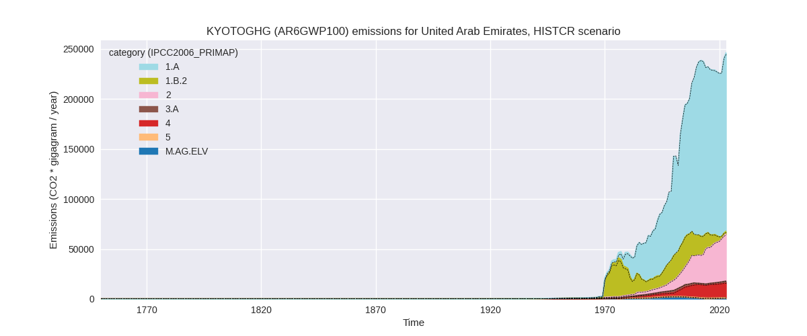
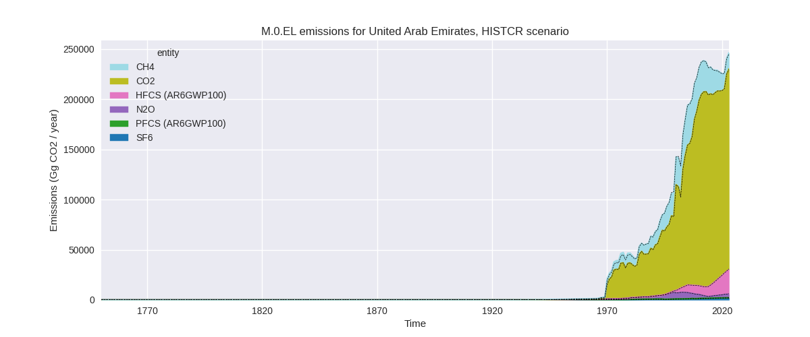
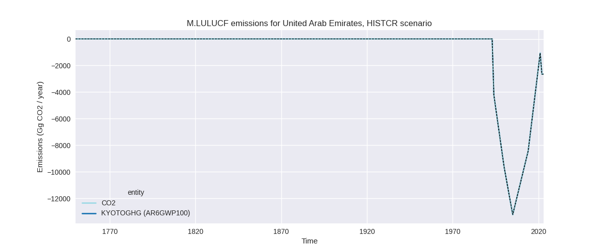
The following figures show the aggregate national total emissions excluding LULUCF AR6GWP100 for the third party priority scenario. The dotted linesshow the v2.6_final data.
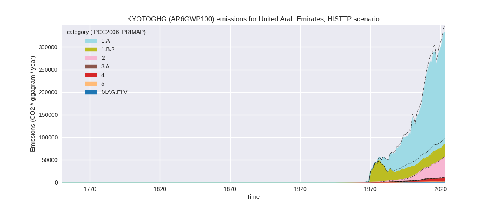
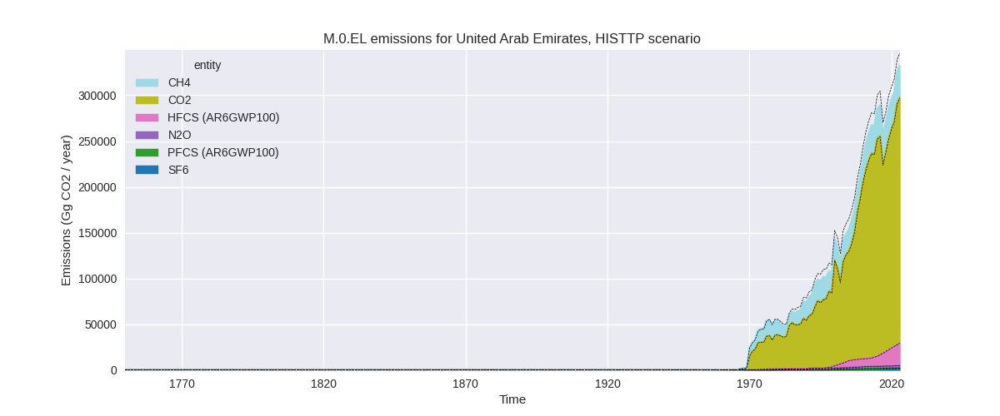
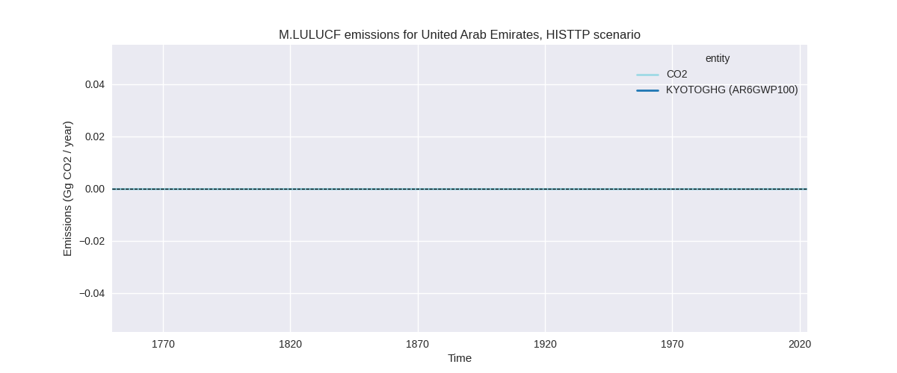
Overview over changes
In the country reported priority scenario we have the following changes for aggregate Kyoto GHG and national total emissions excluding LULUCF (M.0.EL):
- Emissions in 2023 have changed by 0.6%% (1500.38 Gg CO2 / year)
- Emissions in 1990-2023 have changed by -0.1%% (-211.83 Gg CO2 / year)
In the third party priority scenario we have the following changes for aggregate Kyoto GHG and national total emissions excluding LULUCF (M.0.EL):
- Emissions in 2023 have changed by -3.9%% (-13384.18 Gg CO2 / year)
- Emissions in 1990-2023 have changed by -5.5%% (-11061.82 Gg CO2 / year)
Most important changes per scenario and time frame
In the country reported priority scenario the following sector-gas combinations have the highest absolute impact on national total KyotoGHG (AR6GWP100) emissions in 2023 (top 5):
- 1: 2, CO2 with 1241.19 Gg CO2 / year (6.6%)
- 2: 1.B.2, CH4 with 661.83 Gg CO2 / year (inf%)
- 3: 4, CH4 with 269.20 Gg CO2 / year (2.1%)
- 4: 5, N2O with -224.81 Gg CO2 / year (-23.8%)
- 5: 2, HFCS (AR6GWP100) with -180.82 Gg CO2 / year (-0.7%)
In the country reported priority scenario the following sector-gas combinations have the highest absolute impact on national total KyotoGHG (AR6GWP100) emissions in 1990-2023 (top 5):
- 1: 1.B.2, CH4 with -111.53 Gg CO2 / year (-0.8%)
- 2: 5, N2O with -78.13 Gg CO2 / year (-13.6%)
- 3: 4, CH4 with 14.02 Gg CO2 / year (0.2%)
- 4: 2, HFCS (AR6GWP100) with -12.89 Gg CO2 / year (-0.2%)
- 5: 2, CO2 with -10.37 Gg CO2 / year (-0.1%)
In the third party priority scenario the following sector-gas combinations have the highest absolute impact on national total KyotoGHG (AR6GWP100) emissions in 2023 (top 5):
- 1: 1.B.2, CH4 with -13057.41 Gg CO2 / year (-33.7%)
- 2: 2, CO2 with 1238.52 Gg CO2 / year (7.2%)
- 3: 4, CH4 with -1205.71 Gg CO2 / year (-14.5%)
- 4: 5, N2O with -224.81 Gg CO2 / year (-23.8%)
- 5: 2, HFCS (AR6GWP100) with -180.82 Gg CO2 / year (-0.7%)
In the third party priority scenario the following sector-gas combinations have the highest absolute impact on national total KyotoGHG (AR6GWP100) emissions in 1990-2023 (top 5):
- 1: 1.B.2, CH4 with -11086.81 Gg CO2 / year (-34.4%)
- 2: 2, CO2 with 743.43 Gg CO2 / year (7.3%)
- 3: 4, CH4 with -628.75 Gg CO2 / year (-13.6%)
- 4: 5, N2O with -78.13 Gg CO2 / year (-13.6%)
- 5: 2, HFCS (AR6GWP100) with -12.89 Gg CO2 / year (-0.2%)
Notes on data changes
Here we list notes explaining important emissions changes for the country.
- There is no new country reported data and the changes in the CR scenario are small and due to the use of updated third party data for extrapolation of country reported data.
- In the TP scenario the main change is that fugitive CH4 emissions from oil and gas (1.B.2) are much lower than in the previous version because EDGAR data is much lower.
- Waste CH4 is also lower due to lower EDGAR data.
- Changes in other sectors contribute much less to total emissions changes.
Changes by sector and gas
For each scenario and time frame the changes are displayed for all individual sectors and all individual gases. In the sector plot we use aggregate Kyoto GHGs in AR6GWP100. In the gas plot we usenational total emissions without LULUCF.
country reported scenario
2023
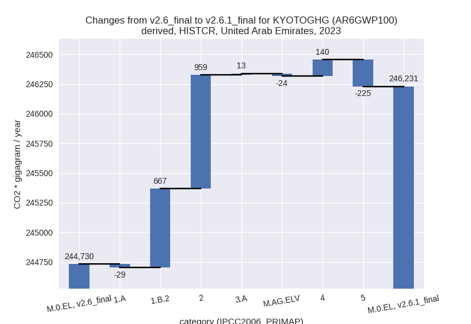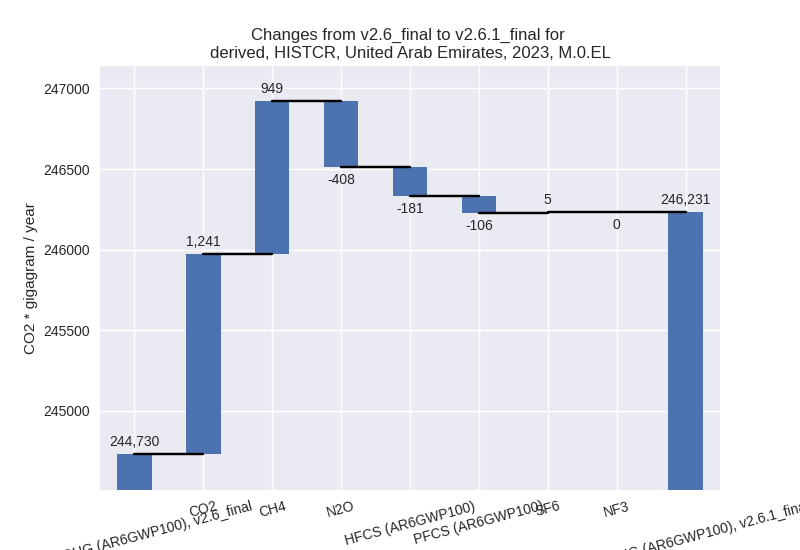
1990-2023
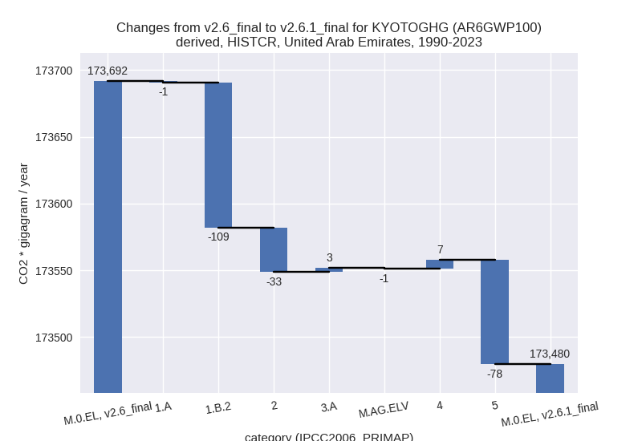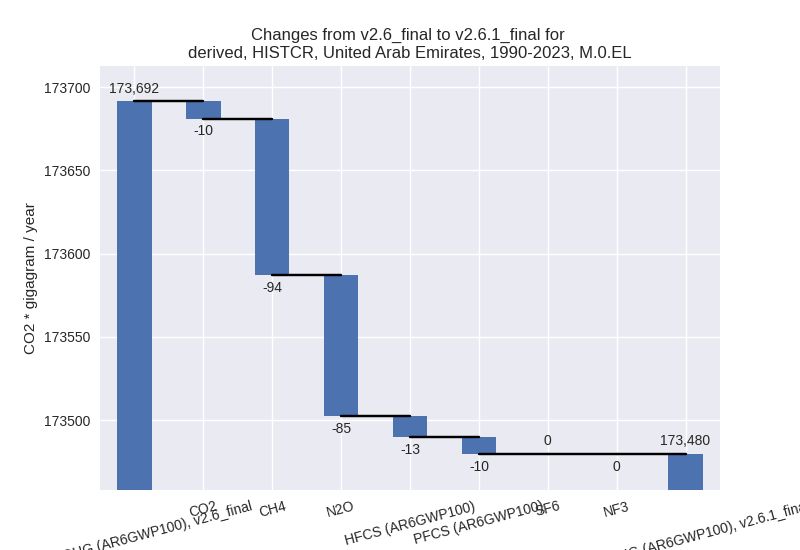
third party scenario
2023
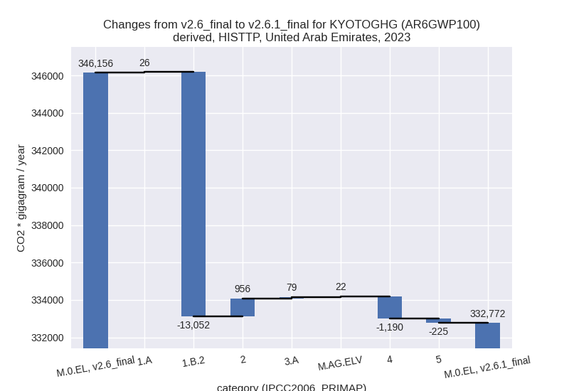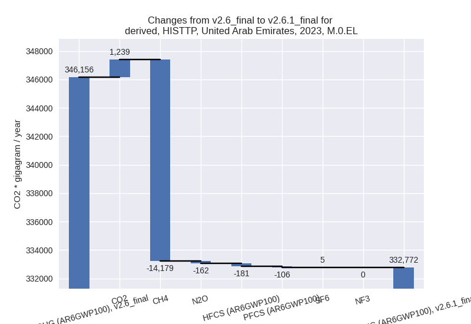
1990-2023
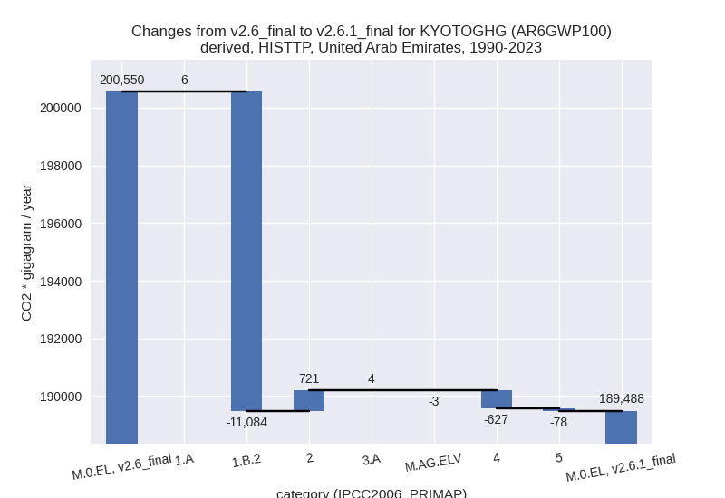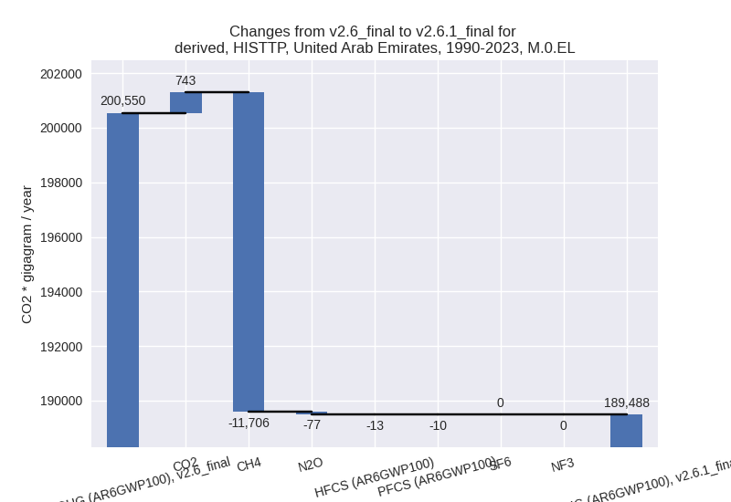
Detailed changes for the scenarios:
country reported scenario (HISTCR):
Most important changes per time frame
For 2023 the following sector-gas combinations have the highest absolute impact on national total KyotoGHG (AR6GWP100) emissions in 2023 (top 5):
- 1: 2, CO2 with 1241.19 Gg CO2 / year (6.6%)
- 2: 1.B.2, CH4 with 661.83 Gg CO2 / year (inf%)
- 3: 4, CH4 with 269.20 Gg CO2 / year (2.1%)
- 4: 5, N2O with -224.81 Gg CO2 / year (-23.8%)
- 5: 2, HFCS (AR6GWP100) with -180.82 Gg CO2 / year (-0.7%)
For 1990-2023 the following sector-gas combinations have the highest absolute impact on national total KyotoGHG (AR6GWP100) emissions in 1990-2023 (top 5):
- 1: 1.B.2, CH4 with -111.53 Gg CO2 / year (-0.8%)
- 2: 5, N2O with -78.13 Gg CO2 / year (-13.6%)
- 3: 4, CH4 with 14.02 Gg CO2 / year (0.2%)
- 4: 2, HFCS (AR6GWP100) with -12.89 Gg CO2 / year (-0.2%)
- 5: 2, CO2 with -10.37 Gg CO2 / year (-0.1%)
Changes in the main sectors for aggregate KyotoGHG (AR6GWP100) are
- 1: Total sectoral emissions in 2022 are 177885.42 Gg CO2 / year which is 73.9% of M.0.EL emissions. 2023 Emissions have changed by 0.4% (638.27 Gg CO2 / year). 1990-2023 Emissions have changed by -0.1% (-109.38 Gg CO2 / year).
- 2: Total sectoral emissions in 2022 are 45279.99 Gg
CO2 / year which is 18.8% of M.0.EL emissions. 2023 Emissions have
changed by 2.1% (958.51 Gg CO2 /
year). 1990-2023 Emissions have changed by -0.2% (-33.19 Gg CO2 / year). For 2023 the
changes per gas
are:
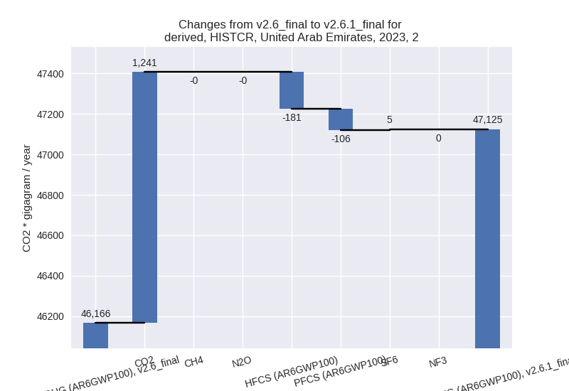 - M.AG: Total sectoral emissions in 2022 are 2361.41 Gg CO2 / year which is 1.0% of M.0.EL emissions. 2023 Emissions have changed by -0.5% (-11.21 Gg CO2 / year). 1990-2023 Emissions have changed by 0.1% (2.21 Gg CO2 / year).
- 4: Total sectoral emissions in 2022 are 14381.11 Gg CO2 / year which is 6.0% of M.0.EL emissions. 2023 Emissions have changed by 1.0% (139.63 Gg CO2 / year). 1990-2023 Emissions have changed by 0.1% (6.67 Gg CO2 / year).
- 5: Total sectoral emissions in 2022 are 711.22 Gg
CO2 / year which is 0.3% of M.0.EL emissions. 2023 Emissions have
changed by -23.8% (-224.81 Gg CO2 /
year). 1990-2023 Emissions have changed by -13.6% (-78.13 Gg CO2 / year). For 2023
the changes per gas
are:
For 1990-2023 the changes per gas are:
third party scenario (HISTTP):
Most important changes per time frame
For 2023 the following sector-gas combinations have the highest absolute impact on national total KyotoGHG (AR6GWP100) emissions in 2023 (top 5):
- 1: 1.B.2, CH4 with -13057.41 Gg CO2 / year (-33.7%)
- 2: 2, CO2 with 1238.52 Gg CO2 / year (7.2%)
- 3: 4, CH4 with -1205.71 Gg CO2 / year (-14.5%)
- 4: 5, N2O with -224.81 Gg CO2 / year (-23.8%)
- 5: 2, HFCS (AR6GWP100) with -180.82 Gg CO2 / year (-0.7%)
For 1990-2023 the following sector-gas combinations have the highest absolute impact on national total KyotoGHG (AR6GWP100) emissions in 1990-2023 (top 5):
- 1: 1.B.2, CH4 with -11086.81 Gg CO2 / year (-34.4%)
- 2: 2, CO2 with 743.43 Gg CO2 / year (7.3%)
- 3: 4, CH4 with -628.75 Gg CO2 / year (-13.6%)
- 4: 5, N2O with -78.13 Gg CO2 / year (-13.6%)
- 5: 2, HFCS (AR6GWP100) with -12.89 Gg CO2 / year (-0.2%)
Changes in the main sectors for aggregate KyotoGHG (AR6GWP100) are
- 1: Total sectoral emissions in 2022 are 272496.28
Gg CO2 / year which is 83.5% of M.0.EL emissions. 2023 Emissions have
changed by -4.5% (-13026.20 Gg CO2 /
year). 1990-2023 Emissions have changed by -6.4% (-11077.84 Gg CO2 / year). For 2023
the changes per gas
are:
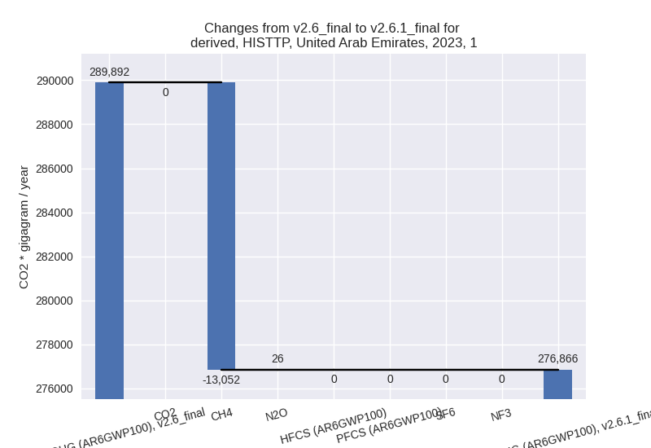
For 1990-2023 the changes per gas are:
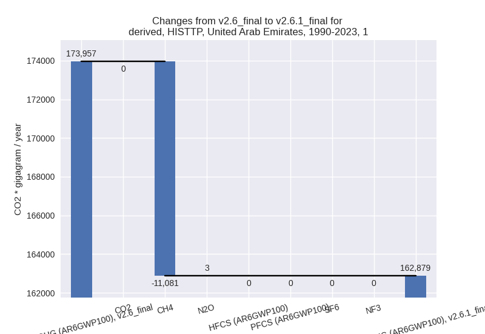
The changes come from the following subsectors:- 1.A: Total sectoral emissions in 2022 are 244037.74 Gg CO2 / year which is 89.6% of category 1 emissions. 2023 Emissions have changed by 0.0% (26.24 Gg CO2 / year). 1990-2023 Emissions have changed by 0.0% (6.10 Gg CO2 / year).
- 1.B.2: Total sectoral emissions in 2022 are
28458.54 Gg CO2 / year which is 10.4% of category 1 emissions. 2023
Emissions have changed by -31.9%
(-13052.44 Gg CO2 / year). 1990-2023 Emissions have changed by -32.4% (-11083.94 Gg CO2 / year). For 2023
the changes per gas
are:
For 1990-2023 the changes per gas are:
There is no subsector information available in PRIMAP-hist.
- 2: Total sectoral emissions in 2022 are 43584.68 Gg
CO2 / year which is 13.4% of M.0.EL emissions. 2023 Emissions have
changed by 2.1% (955.84 Gg CO2 /
year). 1990-2023 Emissions have changed by 3.6% (720.61 Gg CO2 / year). For 2023 the
changes per gas
are:
For 1990-2023 the changes per gas are:
- M.AG: Total sectoral emissions in 2022 are 2306.41
Gg CO2 / year which is 0.7% of M.0.EL emissions. 2023 Emissions have
changed by 4.5% (101.27 Gg CO2 /
year). 1990-2023 Emissions have changed by 0.1% (0.95 Gg CO2 / year). For 2023 the
changes per gas
are:
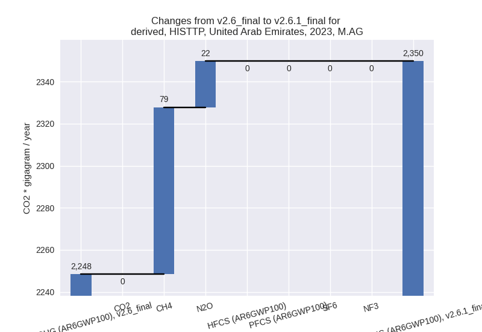
The changes come from the following subsectors:- 3.A: Total sectoral emissions in 2022 are 1566.43
Gg CO2 / year which is 67.9% of category M.AG emissions. 2023 Emissions
have changed by 5.2% (79.46 Gg CO2 /
year). 1990-2023 Emissions have changed by 0.5% (4.32 Gg CO2 / year). For 2023 the
changes per gas
are:
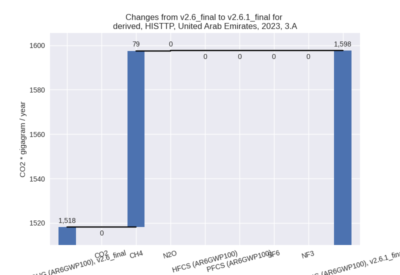
There is no subsector information available in PRIMAP-hist. - M.AG.ELV: Total sectoral emissions in 2022 are
739.98 Gg CO2 / year which is 32.1% of category M.AG emissions. 2023
Emissions have changed by 3.0%
(21.81 Gg CO2 / year). 1990-2023 Emissions have changed by -0.6% (-3.37 Gg CO2 / year). For 2023 the
changes per gas
are:
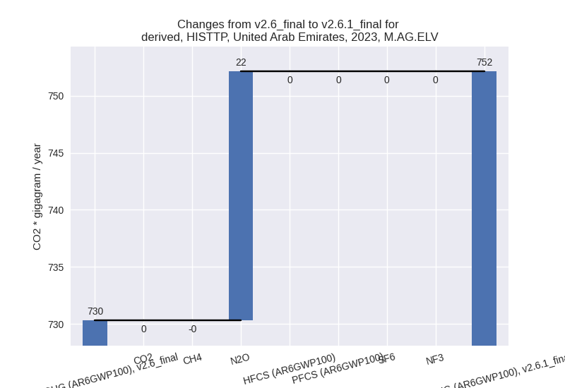
There is no subsector information available in PRIMAP-hist.
- 3.A: Total sectoral emissions in 2022 are 1566.43
Gg CO2 / year which is 67.9% of category M.AG emissions. 2023 Emissions
have changed by 5.2% (79.46 Gg CO2 /
year). 1990-2023 Emissions have changed by 0.5% (4.32 Gg CO2 / year). For 2023 the
changes per gas
are:
- 4: Total sectoral emissions in 2022 are 7171.01 Gg
CO2 / year which is 2.2% of M.0.EL emissions. 2023 Emissions have
changed by -14.0% (-1190.26 Gg CO2 /
year). 1990-2023 Emissions have changed by -13.3% (-627.41 Gg CO2 / year). For 2023
the changes per gas
are:
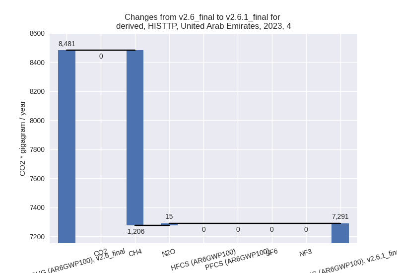
For 1990-2023 the changes per gas are: - 5: Total sectoral emissions in 2022 are 711.22 Gg
CO2 / year which is 0.2% of M.0.EL emissions. 2023 Emissions have
changed by -23.8% (-224.81 Gg CO2 /
year). 1990-2023 Emissions have changed by -13.6% (-78.13 Gg CO2 / year). For 2023
the changes per gas
are:
For 1990-2023 the changes per gas are:
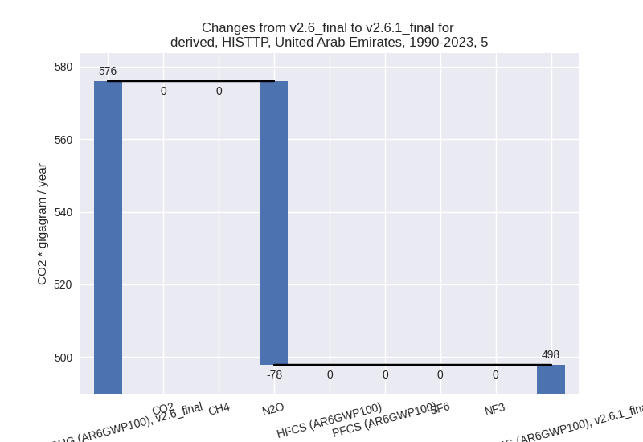